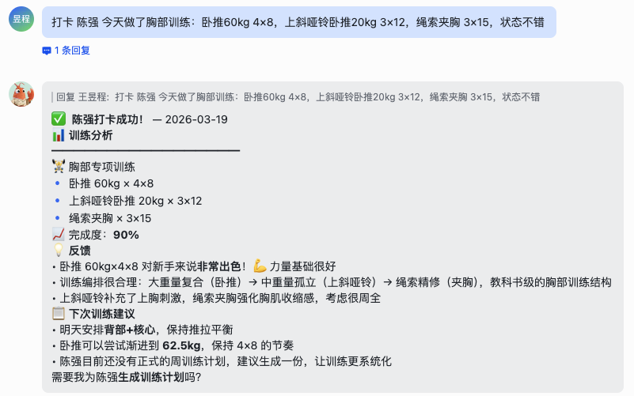

北纬·龙虾大赛（第一届）· 生产力龙虾赛道 · 参赛作品
健身行业正经历数字化转型，但大多数私人教练仍依赖纸质记录、Excel 表格和碎片化的微信沟通管理学员。一位教练通常同时带 20-50 名学员，面临以下痛点：
ClawFit 是一款基于 AI 的智能健身教练助手，以飞书为载体，通过自然语言交互为健身教练提供学员管理、计划生成、打卡跟踪、饮食分析、运营洞察的一站式解决方案。
学员建档 · 计划生成
行为分析 · 运营看板
训练打卡 · 饮食记录
体重追踪 · 即时反馈
图片识别 · 营养分析
动作评估 · 智能提醒
| 维度 | 传统方式 | ClawFit |
|---|---|---|
| 学员建档 | 手动 Excel，耗时 15-30 分钟 | 对话式/模板/批量导入，3 分钟完成 |
| 训练计划 | 通用模板，千人一面 | AI 根据个人数据生成个性化方案 |
| 打卡跟踪 | 微信群接龙，难以量化 | 文字/图片/语音多形态打卡，自动统计 |
| 饮食管理 | 完全依赖学员自觉 | 拍照即分析，AI 实时估算热量和营养素 |
| 流失预警 | 感觉驱动，往往为时已晚 | 数据驱动，≥3 天缺勤自动预警 |
| 运营报告 | 手动汇总，费时费力 | 自动生成周报，一键查看全局数据 |
| 层级 | 技术选型 | 说明 |
|---|---|---|
| 运行平台 | OpenClaw + 妙搭云电脑 | 7×24 小时在线的 AI Agent 运行时 |
| 交互载体 | 飞书（Lark） | 企业级 IM，支持机器人、文档、表格 |
| AI 模型 | Claude Sonnet / Opus | 大语言模型，对话理解和内容生成 |
| 图片分析 | 妙搭多模态模型 | 训练动作、餐食热量、体重秤 OCR |
| 数据存储 | Markdown + 飞书多维表格 | 本地结构化 + 云端可视化 |
| 定时调度 | OpenClaw Cron | 晨间提醒、晚间检查、周报生成 |
ClawFit 支持三种建档方式，适配不同场景需求：
发送「新学员」，通过自然对话逐步收集信息，自动生成档案
下载 Markdown 模板，离线填写后上传，系统自动解析
CSV 模板批量填写，一次性导入多位学员，适合大规模迁移
| 维度 | 具体字段 | 用途 |
|---|---|---|
| 基础信息 | 姓名、性别、年龄、身高、体重、体脂率 | 计算 BMI，制定训练强度 |
| 健身目标 | 减脂/增肌/体态矫正/体能提升 | 个性化计划方向 |
| 身体状况 | 伤病史、禁忌动作 | 安全训练的底线 |
| 训练条件 | 经验等级、可用时间、场地、设备 | 匹配可执行的方案 |
| 饮食习惯 | 忌口、过敏、饮食偏好 | 饮食方案制定依据 |

教练发送 生成计划 <学员名>，AI 根据学员多维数据自动生成个性化周训练计划，每天包含：热身（5-10min）→ 主训练（动作+组数×次数+休息时间）→ 拉伸（5-10min）。
基于飞书多维表格，提供学员目标分布（饼图）、打卡热力图（日历视图）、体重变化（折线图）、打卡率排行（进度条）、流失预警（看板视图）等多维可视化。
| 任务 | 执行时间 | 功能 |
|---|---|---|
| 晨间训练提醒 | 每天 08:55 | 提醒当日有训练计划的学员 |
| 晚间打卡检查 | 每天 21:33 | 检查未打卡学员并推送提醒 |
| 周度运营报告 | 每周日 20:03 | 自动生成并推送运营数据 |
学员发送任意图片，AI 视觉引擎自动判断类型并分类处理：
发送「打卡 + 训练内容」描述
发送训练照片，AI 自动分析动作
发送数值或拍体重秤照片 OCR
ClawFit 最具特色的功能。学员只需拍一张餐食照片，AI 即可完成：
| 时间段 | 自动识别 |
|---|---|
| 05:00 - 10:00 | 早餐 |
| 10:00 - 14:00 | 午餐 |
| 14:00 - 18:00 | 加餐 |
| 18:00 - 22:00 | 晚餐 |
| 22:00 - 05:00 | 夜宵 |
| 分析类型 | 输入 | AI 输出 | 应用场景 |
|---|---|---|---|
| 训练动作分析 | 训练照片 | 动作识别→姿势评估→改进建议→风险提示 | 图片打卡 |
| 体重秤 OCR | 体重秤照片 | 数值提取→单位转换→历史对比→趋势分析 | 体重记录 |
| 餐食营养分析 | 餐食照片 | 菜品识别→热量估算→营养素拆解→饮食建议 | 饮食打卡 |
基于 OpenClaw Cron 引擎，实现晨间训练提醒（08:55）→ 晚间打卡检查（21:33）→ 周度运营报告（周日 20:03）的三层自动化提醒。
| 功能 | 指令 | 触发方式 | 说明 |
|---|---|---|---|
| 建档 | 新学员 / 建档 | 关键词 | 对话式建档 |
| 建档 | 下载模板 / 批量模板 | 关键词 | 获取模板文件 |
| 建档 | 导入档案 / 批量导入 | 关键词+文件 | 解析并创建档案 |
| 计划 | 生成计划 <学员名> | 关键词 | AI 生成周训练计划 |
| 饮食 | 饮食方案 <学员名> | 关键词 | 生成饮食建议 |
| 查询 | 档案 <学员名> | 关键词 | 查看完整档案 |
| 分析 | 分析 / 周报 | 关键词 | 行为分析/周度报告 |
| 看板 | 初始化看板 / 同步看板 | 关键词 | 创建/更新多维表格 |
| 看板 | 排行榜 / 趋势图 / 学员分布 | 关键词 | 可视化图表 |
| 功能 | 指令 | 触发方式 | 说明 |
|---|---|---|---|
| 训练打卡 | 打卡 + 训练内容 | 文字 | 记录训练并获 AI 反馈 |
| 图片打卡 | 发送训练照片 | 图片 | AI 分析动作标准度 |
| 体重记录 | 体重 <数值> 或体重秤照片 | 文字/图片 | 更新体重并显示趋势 |
| 饮食打卡 | 饮食打卡 + 照片 | 关键词+图片 | AI 分析热量和营养素 |
| 饮食查看 | 饮食记录 / 饮食统计 | 关键词 | 近期记录/月度统计 |
| 身体反馈 | 反馈 + 描述 | 关键词 | 记录身体状况，触发调整 |
| 设计决策 | 理由 |
|---|---|
| Markdown 主存储 | 可读性强、版本控制友好、无外部数据库依赖 |
| 按月分文件 | 平衡文件大小与查询效率 |
| 拼音 ID | 人类可读、唯一性保证、避免中文路径 |
| 图片就近存储 | 与记录同目录，方便关联查看 |
| 飞书表格同步 | 提供可视化看板，教练无需离开飞书 |
| 操作 | 教练(私聊) | 教练(群聊) | 学员 | 访客 |
|---|---|---|---|---|
| 学员建档 | ✅ | ✅(需确认) | ❌ | ❌ |
| 生成计划 | ✅ | ✅(需确认) | ❌ | ❌ |
| 查看全员数据 | ✅ | ❌ | ❌ | ❌ |
| 训练/饮食打卡 | ✅ | ✅ | ✅ | ❌ |
| 查看自己数据 | ✅ | ✅ | ✅ | ❌ |
| 系统配置 | ✅ | ❌ | ❌ | ❌ |
| 日期 | 计划 | 实际完成 | 完成率 | 备注 |
|---|---|---|---|---|
| 03-18 | 全身循环 | 卧推60kg 4×8 | 80% | 自主加练胸部 |
| 03-18 | 核心+有氧 | 哑铃卧推50kg 4×10 + 俯身划船 + 平板支撑 | 85% | 膝盖无不适 |
本项目参加「生产力龙虾」赛道。ClawFit 通过 AI 赋能健身教练，将传统低效的手工管理升级为智能化、数据驱动的管理方式，真正实现"让每一位教练都能高效管理百名学员"。
| 阶段 | 规划内容 | 预期效果 |
|---|---|---|
| 近期 | 接入更多 AI 模型提升图片分析精度 | 动作评估准确率 >90% |
| 中期 | 支持语音交互，学员可语音打卡 | 降低使用门槛 |
| 中期 | 接入可穿戴设备数据（Apple Watch等） | 自动采集心率、步数 |
| 远期 | 多教练协作，支持健身工作室场景 | 团队化运营能力 |
| 远期 | AI 视频分析，实时评估训练动作 | 静态→动态突破 |